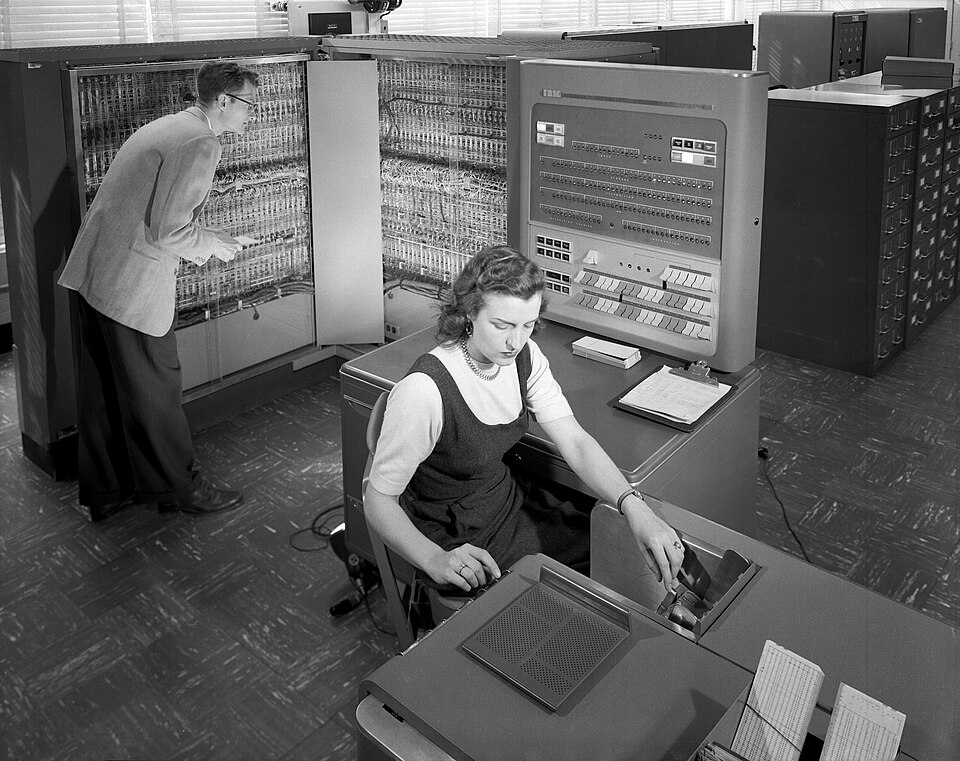
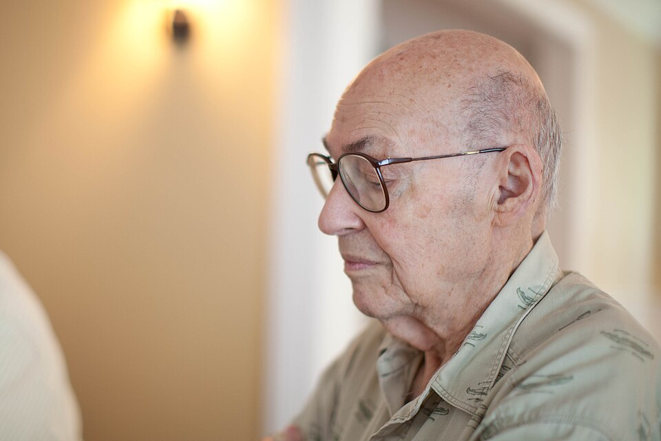
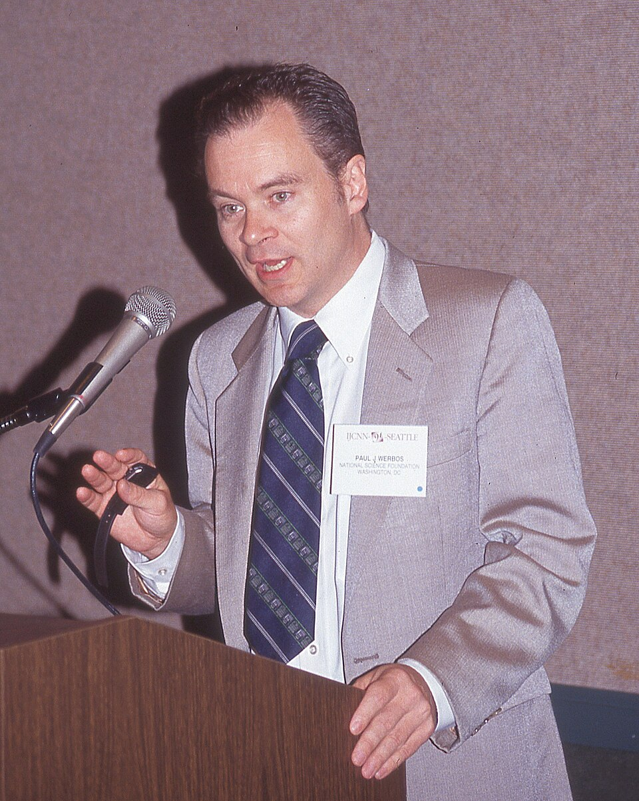
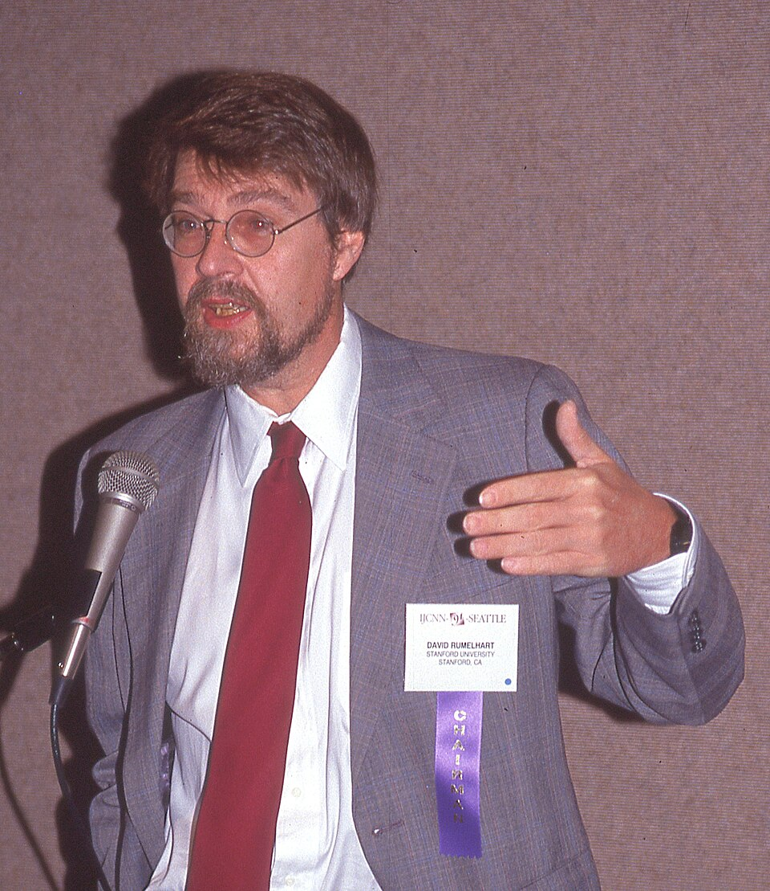
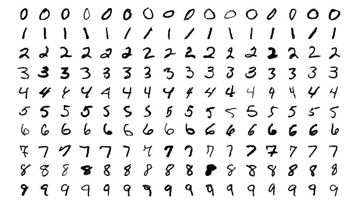
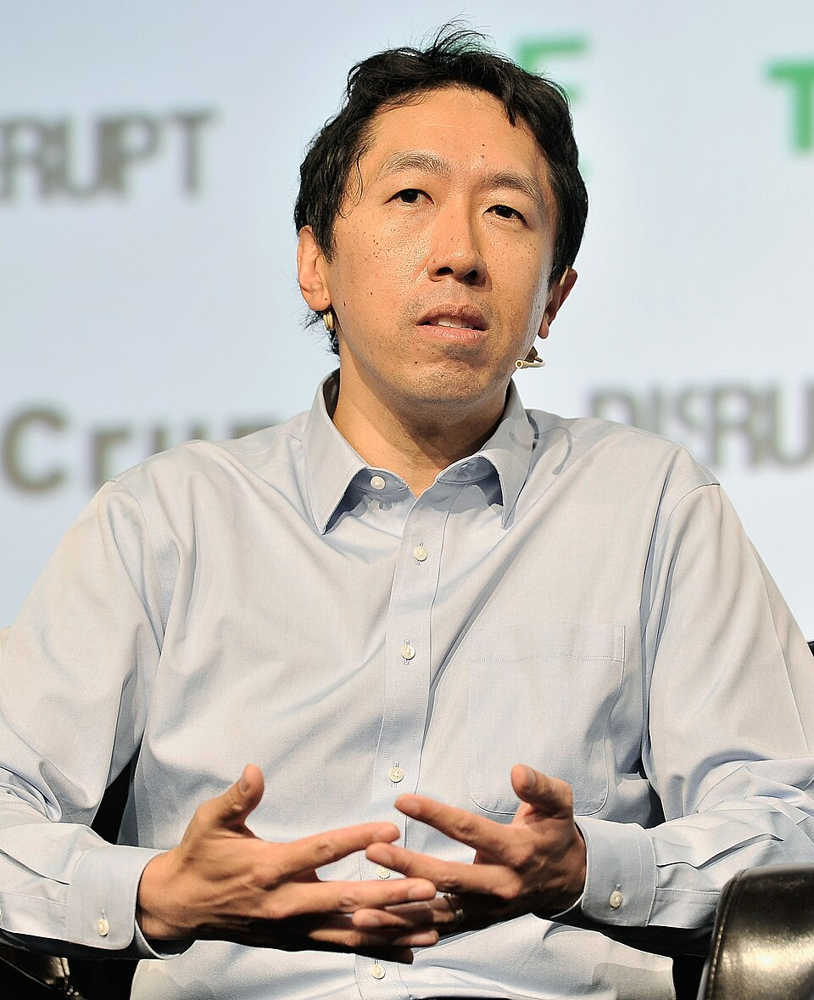
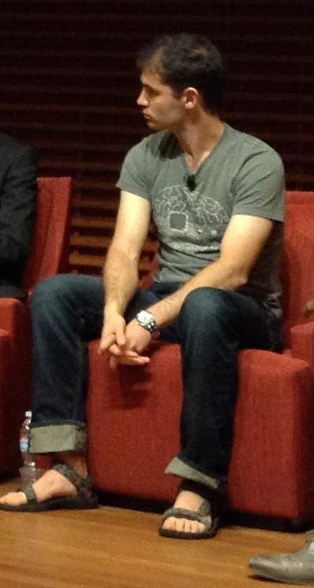
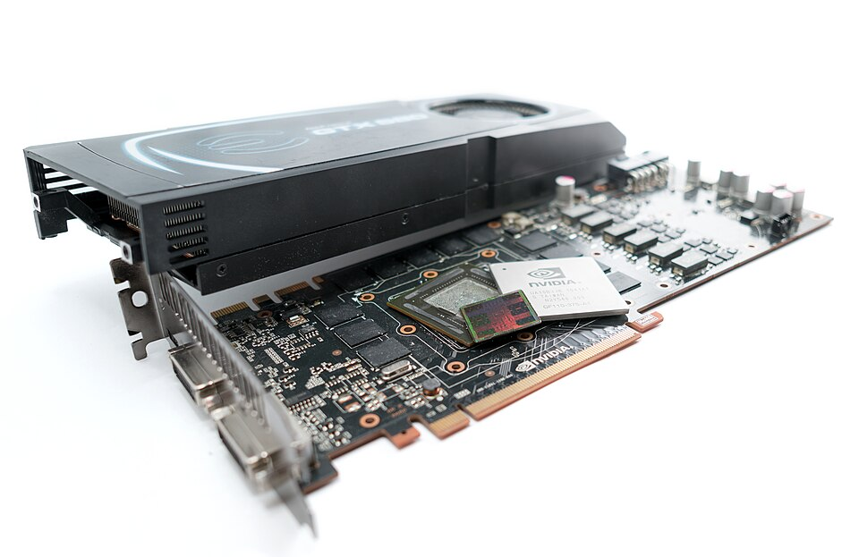
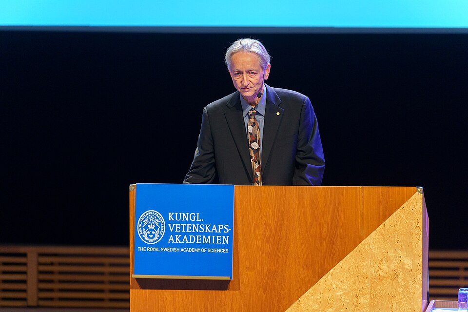

A máquina que aprende
De 1943 a 2012, em ordem e com as pessoas. Em vez de escrever as regras, dá-se à máquina milhares de exemplos e um mecanismo que ajusta os próprios números até acertar: o programa não é escrito, é achado. A ideia é mais velha que o transistor e passou quase cinquenta anos esperando o hardware baratear. Quando o áudio pedir, aperte Próximo.
Os botões. Um neurônio artificial soma entradas, cada uma passando por um botão giratório que aumenta ou diminui o quanto ela conta, e dispara se a soma passar de um limite. Aprender é girar cada botão um pouquinho, na direção que faz o erro diminuir, milhares de vezes. Em 1960 os botões eram de verdade; na AlexNet são 60 milhões de números.
O perceptron
O algoritmo era tão novo que precisou de hardware sob medida, com botão físico. E a promessa do jornal era mil vezes maior que a máquina.


A gaveta
Uma crítica correta sobre uma camada, num tempo sem hardware pra testar mais camadas, guardou a ideia por quinze anos.


Propagar o erro pra trás
A chave da gaveta existia desde 1974. Em 1986 o hardware rodava ela, devagar, em problemas pequenos.


A rede lê cheque
O primeiro uso real é num problema pequeno, e ainda assim precisou de chip próprio. Pra imagem grande, o hardware não existia.


O segundo inverno
Faltavam duas coisas que o algoritmo não podia dar: dado e hardware. As duas estavam sendo construídas em outro lugar, por outros motivos.

A placa de jogo treina a rede
A peça feita pra jogo em 1996 e aberta em 2007 encontra o algoritmo de 1986. Nenhum dos dois foi feito pro outro.

O ImageNet
Em 2011 as três peças estão na mesa: o algoritmo de 1986, a placa de 2007, o dado de 2009. Falta alguém juntar.

A AlexNet
Duas placas feitas pra jogo fizeram em uma semana o que em 1986 não dava em nenhum prazo. A ideia da gaveta encontrou a peça.


Ninguém escreveu o gato

Nenhuma linha da AlexNet diz o que é um gato. O código descreve a forma da rede e a regra de girar os botões. O que reconhece o gato são 60 milhões de números girados pelo erro: dá pra medir que funciona, não dá pra explicar o que cada número faz.
Todo mundo muda de peça

Em março de 2013 o Google compra a empresa dos três de Toronto; em dezembro o Facebook contrata LeCun. Quem perdeu em 2012 usa rede e placa em 2013. O erro do ImageNet cai todo ano: em 2015 uma rede de 152 camadas erra 3,6%, menos que uma pessoa treinada.
2012
A rede olha a imagem inteira de uma vez, e por isso a placa gosta dela. Mas texto é uma fila de palavras. Como uma máquina que gosta de fazer tudo ao mesmo tempo lê uma fila?